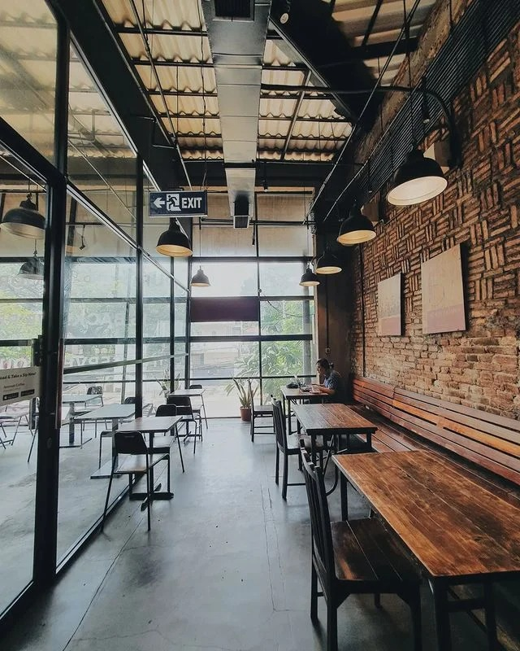

1. Anomali Coffee

Anomali Coffee punya banyak cabang di Jakarta, yang paling besar ada di kawasan Senopati.
Coffee shop berlantai dua ini bermula dari sebuah ruko kecil, 11 tahun lalu. Kini bangunannya terkesan
lebih nyaman, luas, dan mengusung konsep rustic industrial yang gaul.
Anomali Coffee menawarkan specialty coffee. Di sini kamu dapat mencicipi kopi yang diroasting sendiri.
Kamu bisa pesen Espresso, Americano, atau Cappuccino. Ada juga Kopi Susu Gula Aren bagi yang suka rasa
agak manis.
bukan hanya ngopi, Anomali Coffee juga menyediakan aneka menu breakfast, main course, dan snack.
Pas banget buat jadi temen ngopi kamu.
Photo source: @jakartacoffeespot
Lokasi: Jl. Senopati No. 19, Jakarta